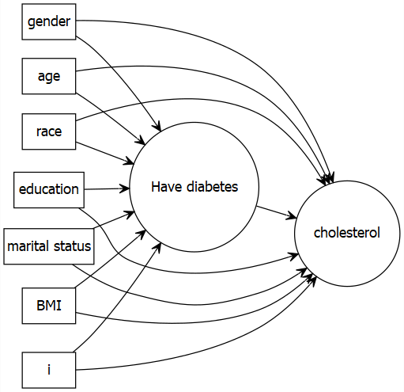
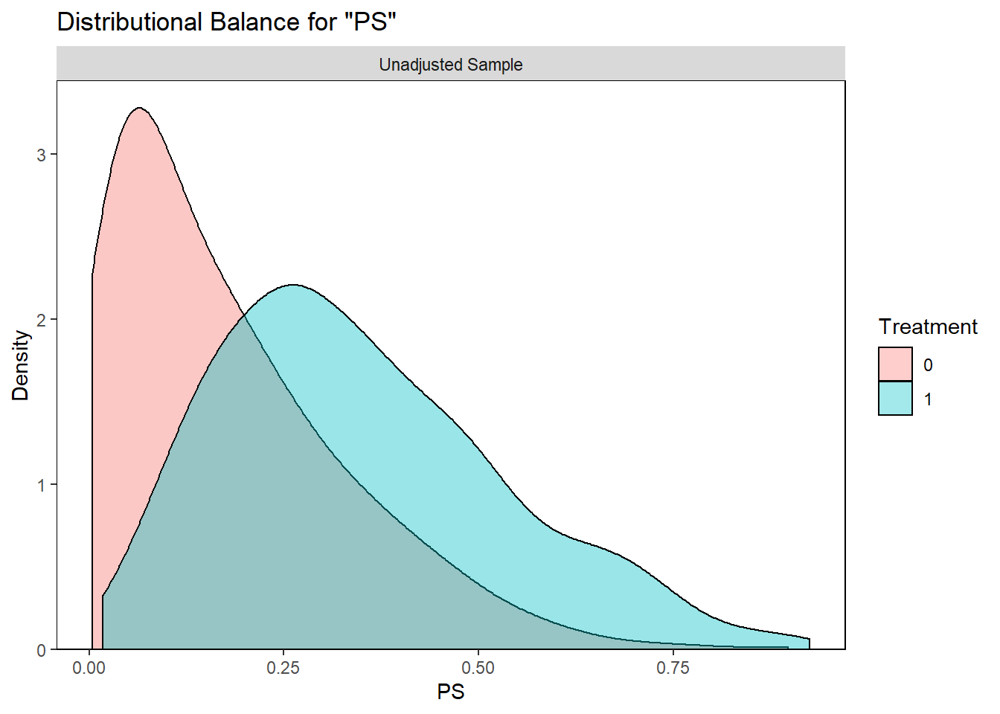

Chapter 4 Step 1: Exposure modelling
4.1 Model specification
Specify the propensity score model to estimate propensity scores, and fit the model:
\(A \sim L\)
baselinevars <- c("gender", "age", "race", "education", "married", "bmi")
ps.formula <- as.formula(paste("diabetes", "~", paste(baselinevars, collapse = "+")))
ps.formula## diabetes ~ gender + age + race + education + married + bmi# fit logistic regression to estimate propensity scores
PS.fit <- glm(ps.formula,family="binomial", data=analytic)
require(jtools)
summ(PS.fit)| Observations | 1562 |
| Dependent variable | diabetes |
| Type | Generalized linear model |
| Family | binomial |
| Link | logit |
| χ²(10) | 282.89 |
| Pseudo-R² (Cragg-Uhler) | 0.26 |
| Pseudo-R² (McFadden) | 0.18 |
| AIC | 1349.94 |
| BIC | 1408.83 |
| Est. | S.E. | z val. | p | |
|---|---|---|---|---|
| (Intercept) | -8.38 | 0.58 | -14.49 | 0.00 |
| genderMale | 0.34 | 0.15 | 2.26 | 0.02 |
| age | 0.06 | 0.01 | 11.26 | 0.00 |
| raceHispanic | 0.15 | 0.23 | 0.64 | 0.52 |
| raceOther | 0.76 | 0.23 | 3.25 | 0.00 |
| raceWhite | -0.23 | 0.18 | -1.23 | 0.22 |
| educationHigh.School | 0.14 | 0.15 | 0.95 | 0.34 |
| educationSchool | 0.52 | 0.27 | 1.92 | 0.05 |
| marriedNever.married | -0.04 | 0.25 | -0.16 | 0.88 |
| marriedPreviously.married | -0.02 | 0.16 | -0.15 | 0.88 |
| bmi | 0.10 | 0.01 | 10.14 | 0.00 |
| Standard errors: MLE |
- Coef of PS model fit is not of concern
- Model can be rich: to the extent that prediction is better
- But look for multi-collinearity issues
- SE too high?
4.1.1 Updating model specification
- What other model specifications are possible?
- Common terms to add (indeed based on biological plausibility; requiring subject area knowledge)
# Interactions
ps.formula2 <- as.formula(paste("diabetes", "~", paste(baselinevars, collapse = "+"), "+ education:bmi + gender:age"))
ps.formula2## diabetes ~ gender + age + race + education + married + bmi +
## education:bmi + gender:age# polynomials or splines
ps.formula3 <- as.formula(paste("diabetes", "~", paste(baselinevars, collapse = "+"), "+ age^2 + age^3"))
ps.formula3## diabetes ~ gender + age + race + education + married + bmi +
## age^2 + age^3# transformations
ps.formula4 <- as.formula(paste("diabetes", "~", paste(baselinevars, collapse = "+"), "+ log(age)"))
ps.formula4## diabetes ~ gender + age + race + education + married + bmi +
## log(age)4.1.2 Stability of PS
- How many variables in PS model are too many?
- Depends on the sample size
- Too many variables (and too many interaction + polynomials) means too many parameters \(p\) to be estimated
- If large data is available, might not be a problem
- Again look at the stability: the exposure model coef SEs
- Depends on the sample size
4.2 Variables to adjust
4.2.1 Best approach
- Subject area expertise
- known from literature
- Try drawing causal diagram to determine which variables to include

4.2.2 General guideline of type of variables
See Brookhart et al. (2006) for a guideline (not based on empirical association in the same data)
- Observed covariates are used to fix design
- Which covariates should be selected (based on subject area expertise; not based on empirical correlation analysis):
- known to be a confounder (causes of \(Y\) and \(A\))
- known to be a cause of the outcome (risk factors of \(Y\))
4.2.3 What NOT to include
- Two types
- avoid known instruments or noise variables: SE suffers
- mediating factors should be avoided (total effect = goal)
4.3 Model selection (Not encouraged!)
- not encouraged, as this is utilizing empirical associations
- creates post-selection problem
- There are debate about this (ideal vs. pragmatism)
- see Karim, Pang, and Platt (2018) for an example.
4.3.1 Based on association with outcome
- Selecting just based on association with the outcome (\(Y\)) in your data to select covariates is not encouraged
- seperation between outcome and exposure modelling is broken!
- Usually done in a situation when
- we are not sure whether a variable should be included in the PS model
- no clear indication in the literature, or based on subject area knowledge.
- we are unsure if this is a confounder or risk factor or noise
- We show here an example that can be considered as a middle-ground
- keep known confounders + risk factors of outcome
- use variable selection only on the variables about which we are unsure
# Assuming that you are not sure if education and married
# variables should be included in the PS analysis
# Try outcome modelling as follows:
formula.full <- as.formula(paste("cholesterol", "~", "gender +
age + race + education+ married + bmi"))
fit.0 <- glm(formula.full,
family=binomial, data = analytic)
scope <- list(upper = ~ gender + age + race + education+ married + bmi,
# upper included all variables (known + unsure)
lower = ~ gender + age + race + bmi)
# lower included only known confounders + risk factors of outcome
fitstep <- step(fit.0, scope = scope, trace = FALSE,
k = 2, direction = "backward")
# k = 2 is equivalant to AICformula(fitstep)## cholesterol ~ gender + age + race + bmi# if education, married (one or both) survives this
# stepwise, then consider adding that/those in the PS model
# If not, discard from the PS model.
formula.chosen <- as.formula(paste("diabetes", "~", "gender +
age + race + bmi"))
formula.chosen## diabetes ~ gender + age + race + bmi# We, however, did not use this approach below.- Stepwise (p-value or criterion based) not recommended
- depending on sample size, different values can get selected
4.3.2 Based on association with exposure
- Selecting based on association with the exposure (\(A\)) in your data to select covariates can be the worst!
- May attract instruments
- strongly discouraged!
- Below is an example of what NOT to do.
# Assume again that you are not sure if education and married
# variables should be included in the PS analysis
# Try exposure modelling as follows:
formula.full.e <- as.formula(paste("diabetes", "~", "gender +
age + race + education+ married + bmi"))
fit.1 <- glm(formula.full.e,
family=binomial, data = analytic)
scope <- list(upper = ~ gender + age + race + education+ married + bmi,
lower = ~ gender + age + race + bmi)
fitstep.e <- step(fit.1, scope = scope, trace = FALSE,
k = 2, direction = "backward")formula(fitstep.e)## diabetes ~ gender + age + race + bmi# This is the chosen PS model by this approach.
# We, however, did not use this approach below.4.4 Alternative modelling strategies
- Other machine learning alternatives are possible to use instead of logistic regression.
- tree based methods have better ability to detect non-linearity / non-additivity (model-specification aspect)
- shrinkage methods - lasso / elastic net may better deal with multi-collinearity
- ensemble learners / super learners were successfully used
- shallow/deep learning!
4.5 PS estimation
PS is unknown, and needs to be estimated from the fitted exposure model:
# extract estimated propensity scores from the fit
analytic$PS <- predict(PS.fit, newdata = analytic, type="response")require(cobalt)
bal.plot(analytic, var.name = "PS",
treat = "diabetes",
which = "both",
data = analytic)

|
Don’t loose sight that better balance is the ultimate goal for propensity score |
|
|
Prediction of \(A\) is just a means to that end (as true PS is unknown) |
|
|
May attract variables highly associated with \(A\) |
References
Brookhart, M Alan, Sebastian Schneeweiss, Kenneth J Rothman, Robert J Glynn, Jerry Avorn, and Til Stürmer. 2006. “Variable Selection for Propensity Score Models.” American Journal of Epidemiology 163 (12): 1149–56.
Karim, Mohammad Ehsanul, Menglan Pang, and Robert W Platt. 2018. “Can We Train Machine Learning Methods to Outperform the High-Dimensional Propensity Score Algorithm?” Epidemiology 29 (2): 191–98.